Rough scan connects your phone's camera to the studio. It opens the scanner in a window over the studio. The scanner shows a code. You scan it with your phone, and the phone's camera then appears live in the scanner. Point the phone at a printed scanning board with the rock on it, and the phone finds the board and works out where the camera is above it. It draws the board's grid over its own picture and sends what it found to the computer, which draws it over the phone's picture too. This is the first step towards scanning a piece of rough with your phone: for now it shows what the phone sees, and does not yet build a model of the rock.
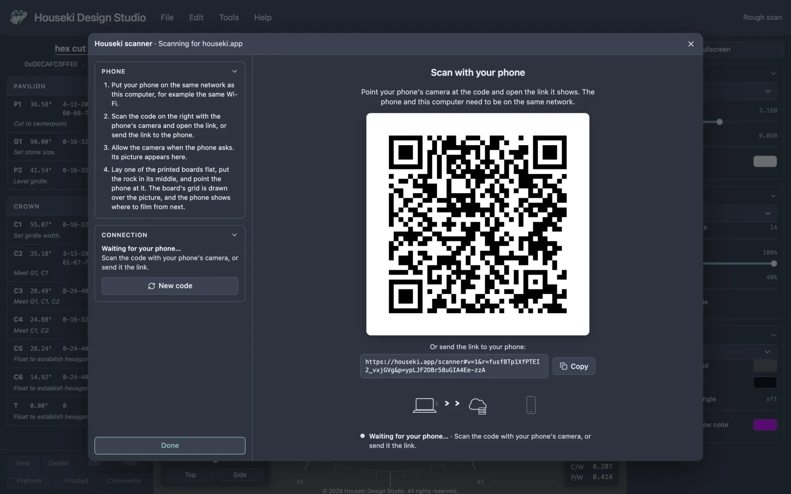
The same scanner can be added to other websites, which can then ask you to scan a rough for them: see The scanner on your website.
The phone and this computer need to be on the same network, for example the same Wi-Fi. The picture goes straight from the phone to the computer over that network. Both also need an internet connection while they connect.
To find the rock and where the camera is, the phone needs one of the three Houseki Scanner boards. All three are the same chessboard of squares, 23 across and 17 down, each 10 mm wide, with a small square code in every other square and a little grey spiral in each of the others, and a measuring bar along the bottom and down the right-hand side. They differ in their colours, so that the rock stands out against the board:
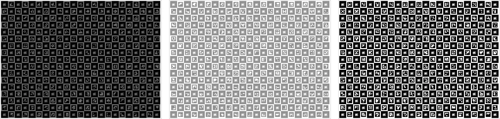
| Board | For | Printed under it |
|---|---|---|
| Black and grey | dark rough | palette black-to-grey |
| Grey and white | light rough, such as clear quartz | palette grey-to-white |
| Black and white | everything in between | palette black-to-white |
Use whichever suits the rock: the phone recognises all three, tells them apart by their codes, and the scanner shows which one it sees (see In the scanner). Each square must be 10 mm wide: print the board so that the image is exactly 25.00 cm by 18.25 cm, as the text under it says (in a word processor, set the picture's size; print at 100%, not "fit to page"), and check that both bars measure exactly 100 mm. Use matte paper, lay it flat, in even light, and put the rock in the middle of the board.
Older Houseki scanning boards are not recognised: the phone sees no board in them.
The printable board is not offered for download on this site yet.
Choose Tools > Rough scan. It works whatever is loaded. It is greyed out while another mode, such as editing a tier, is open, and its tooltip then says which one to finish first. While it is open, the top bar's mode readout says Rough scan.
The scanner opens in a window over the studio. Its title bar says which site it is scanning for: Houseki scanner · Scanning for houseki.app when you use the studio on this site. In a copy of the studio saved to your computer it says Scanning for a page on this computer, and the scanner itself comes from this site, so the computer needs an internet connection to open it. If it cannot be reached, the window says The scanner could not be loaded. Check your internet connection, then try again., with a Close button.
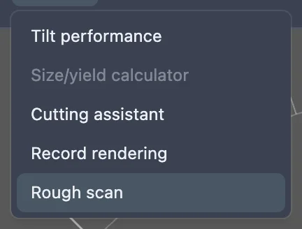
Under the code is the same link as text. Click Copy to copy it (the button says Copied for a moment), then send it to your phone, for example in a message to yourself, and open it there. You can also select the text and copy it yourself: one click selects all of it. If your browser will not copy it for you, the scanner selects the link and tells you which keys copy it.
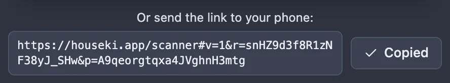
The link works like a key to this session: anyone who opens it can connect their camera, so send it only to your own phone.
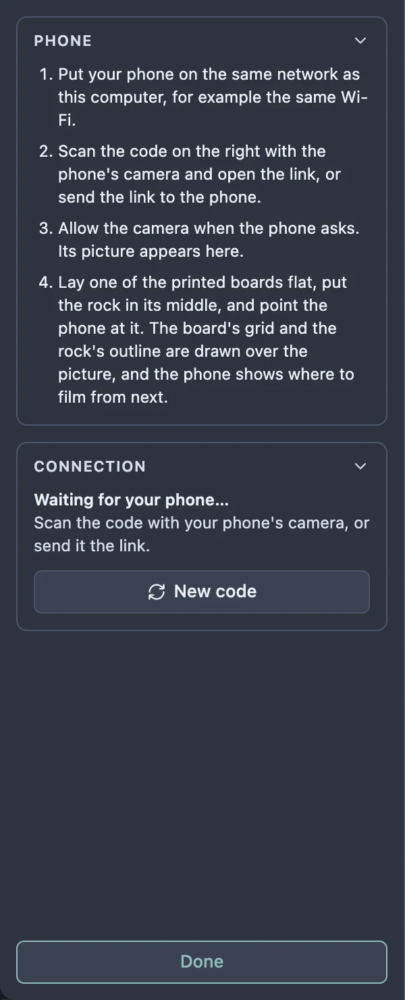
The Connection card on the left, and the line under the code, say how far it has got. See Watching the connection below for each step. Once the phone's picture is showing, they say Streaming.
Connecting takes a few seconds, sometimes longer. On the computer, under the code, and at the bottom of the phone's screen, a small picture shows what is happening: this computer on the left, the internet servers that introduce the two devices in the middle (a cloud), and the phone on the right, with arrows moving between them. The arrows leaving the device you are looking at run along the top. Under the picture, a line names the step (on the computer, the Connection card says the same):
| Step | In the picture | What is happening |
|---|---|---|
| Connecting to the servers… (5 of 8) | grey arrows from this device to the servers; the servers and the other device greyed out | The device connects to the servers that pass messages between the two. The numbers say how many are ready. |
| Waiting for your phone… on the computer, Looking for your computer… on the phone | the servers turn white, and the arrows white and bold | More than half of the servers are ready, and the device is waiting to hear from the other one. Both devices use the same servers, so once each has more than half of them, they always share at least one. |
| Exchanging connection details with your phone… | the other device lights up; arrows run through the servers both ways | The two have found each other and swap what each needs to reach the other, through the servers, encrypted with the session's password. |
| Setting up a direct connection to your phone… | the servers disappear; arrows run straight between the two | The devices try to reach each other directly over your network. |
| Checking the password… | as above | Over the direct connection, each checks that the other has this session's password. |
| Connected | as above | The camera starts streaming: on the computer its picture takes the code's place, and on the phone the picture folds away after a few seconds to leave the screen to the camera. |
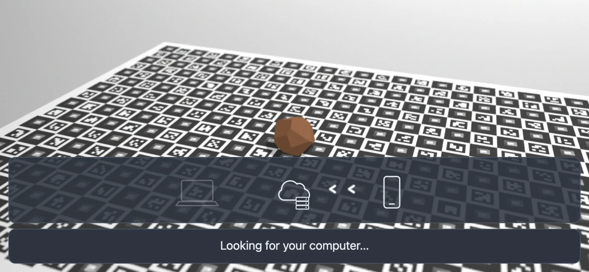
If the direct connection fails, the line says The direct connection to your phone failed. Trying again…, and the card explains the usual causes: a VPN on either device, a Wi-Fi network that keeps devices apart (guest, office, school or hotel Wi-Fi), or the phone on mobile data. Connecting both to the same home Wi-Fi, or this computer to the phone's own hotspot, usually fixes it. A red cross on the picture means the connection has stopped.
If the phone leaves (it closed the page or lost the network), the computer says Phone disconnected and shows the same code again. As soon as a phone opens that code again (the same phone or another), the picture and the line follow it through the same steps until its camera appears.
For more detail, open the browser's developer console (on most computers
F12, or Cmd+Option+J in Chrome on a Mac). Every
step is written there as it happens, each line starting [houseki scan computer
or [houseki scan phone with the seconds since the session started: each server
connecting and confirming, each message sent and received, the addresses each device tries,
whether the direct connection worked and how (for example host ↔ host over udp (same
network)), and any server that refused and why. Copying those lines is the quickest way to
report a connection problem.
The phone shows its camera full screen. It gets its board finder ready while it connects to the computer, so it is usually ready by the time it has connected; if it is not yet, the line above the connection says Getting the board finder ready... until it is. If it says The board finder could not load instead, the camera still streams to the computer, but nothing is drawn; the small line under it says why, which is worth including if you report it. Then point it at the board with the rock in its middle. Over the picture it draws what it finds:
If the blue lines sit on the edges of the printed squares, the phone has the board right. The drawing follows the board while you move the phone: the phone follows the squares from every picture to the next, while it searches the whole picture for the board from time to time alongside, and it draws each picture where the board is in that picture. Each picture and the drawing over it reach the screen together, so the drawing is never shown over a later picture than the one it was made for. If you stop suddenly, the drawing may overshoot for a moment and then settle back. If the lines slide off the squares and stay off, the phone has lost track of where it is: hold it steady for a moment.
The grid shows as soon as the phone has found at least two of the board's codes, even before it can work out where the camera is (for example while it is still measuring the camera). Then it is drawn from where those codes were found in the picture, so it can lag a little behind a moving picture and sit a little off the squares near the edges of the screen. With only one code in view, only the corners found are drawn, joined by blue lines.
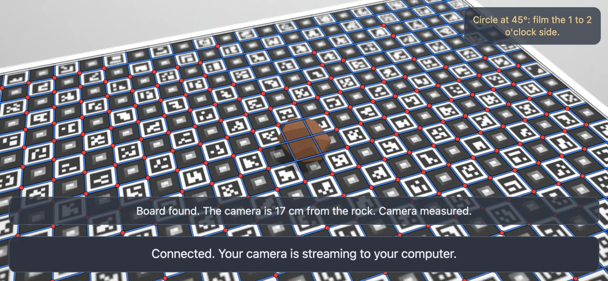
To be scanned well, a rock needs to be filmed from all round and from several heights. The phone keeps track of this while you film, and the box at the top right of its screen says what to film next. It asks you to finish the circle you are on (Circle at 45°: film the 10 to 11 o'clock side., or keep going all the way round while most of it is still to film), then to add a low circle with the phone about 15° above the board, then a circle at about 45°, and last a view from straight above the rock. The sides are those of a clock seen from above, with the top edge of the printed sheet at 12 o'clock. A side counts as filmed once the phone has had a sharp, steady view of the rock from there, with the whole rock in the picture. When everything is filmed it says Every side and height is filmed.
Move slowly: about half a minute for a full circle is right. What has been filmed starts afresh each time the scanner page opens, including when you reload it. The scanner on the computer shows it as a map (see In the scanner).
When something is wrong with the picture, the phone says so in large letters just above the middle of the screen, where you are looking. It shows one warning at a time, the most important first. A warning appears once the problem has lasted about a third of a second, and goes half a second after it is fixed, so it does not flicker.
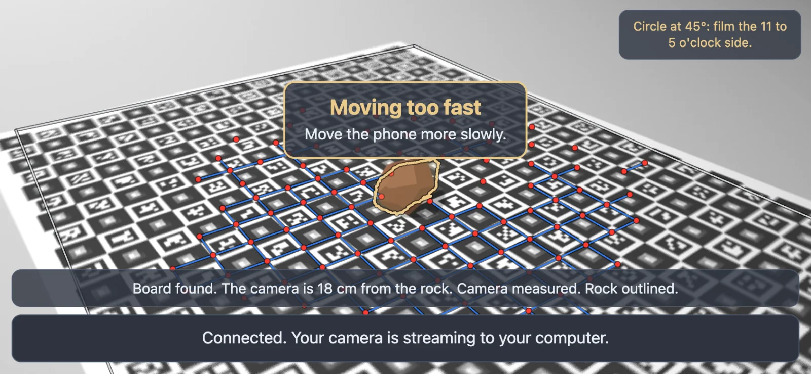
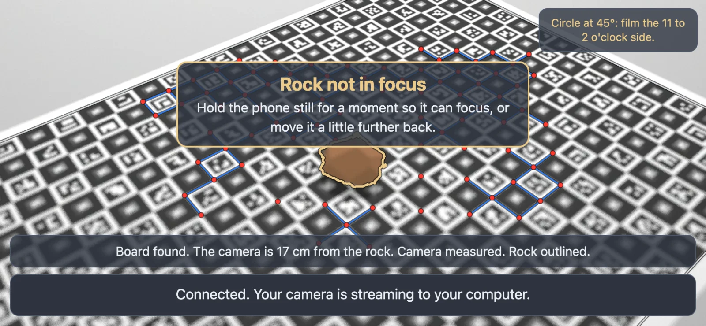
Views taken while a warning shows do not count as filmed.
The line above the connection's says, in a few words, what the phone sees:
Press and hold the lines at the bottom of the screen for about half a second, and a line of numbers about how fast the phone works appears between them. Press and hold again to hide it. The phone remembers whether it is shown. The same numbers, in words, are in the scanner's Speed row (see below), so you can read them on the computer instead.
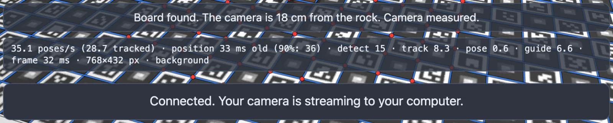
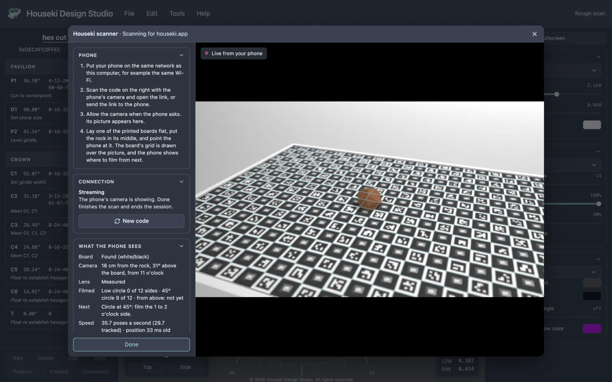
The picture fills the right of the scanner, with Live from your phone at its top left, and follows the phone as you move it. The board's grid is drawn over it. They come from the phone up to ten times a second, so they can trail the picture for a moment when the phone moves quickly. If the phone stops sending them (it lost the board, or the page on it was closed), they fade within half a second and go after three.
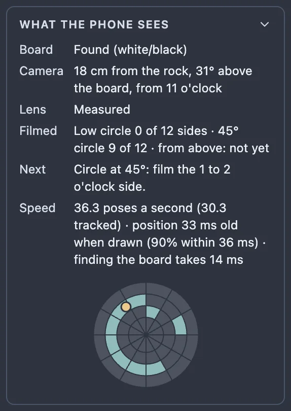
The What the phone sees card on the left of the scanner reads the same out in words:
Under them is a map of what has been filmed: the sheet seen from above, with the top edge of the printed sheet at the top. Its rings are heights: the outer ring is the phone held low, under 20° above the board; the next two rings are 20-40° and 40-60°; the middle is looking down from above 60°. Each ring is cut into twelve sides, one per hour of a clock, and a cell fills in once that side is filmed. The yellow dot is where the camera is now.
If the phone has sent nothing for a few seconds, the card says so. A phone whose page is from before these measurements existed still streams its picture; the scanner then simply shows the picture, with no drawing and no card.
If the phone closes the page or loses the network, the picture goes away, the scanner says Phone disconnected, and the code comes back. Scan it, or open the link on the phone again, to reconnect.
New code in the Connection card ends the session and starts a new one with a new code and link. A phone that is connected is cut off, and the old link stops working. Use it if you sent the link somewhere you should not have.
If the scanner cannot reach the internet to connect the phone, the code is replaced by a message saying so. Check this computer's internet connection; the code comes back as soon as the connection works.
Click Done at the bottom of the scanner's left-hand side, click the × at the right of its title bar, or press Esc. The scanner closes, the session ends, so the link the phone opened stops working, and the studio and the stone are back as they were. The next time you open Rough scan it makes a new code and link. Nothing in the design changes, so Undo and Redo do nothing while the scanner is open, and the design cannot be edited until it is closed.